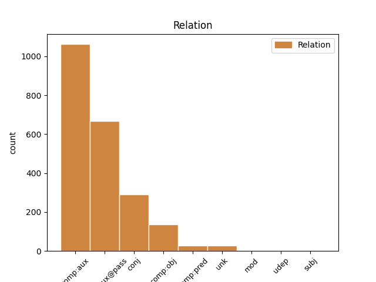
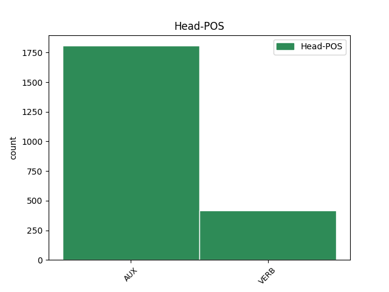
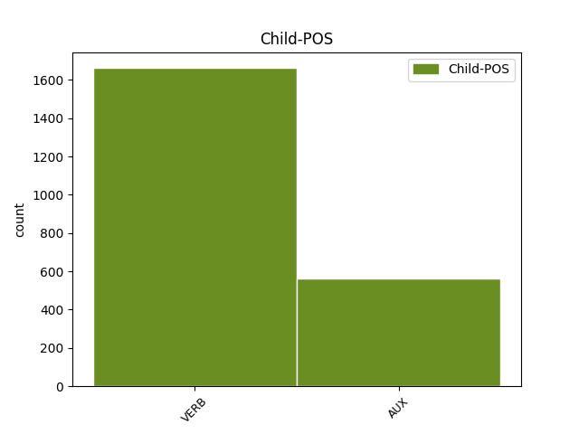

Distribution of features within this leaf



Agreement Rules sorted by frequency.
- When the dependent token is the complement for auxiliary(comp:aux) of the head token,
1 Ons _ _ _ _ 0 _ _ _
2 kan kan AUX VTUOM Tense=Pres|VerbForm=Fin,Inf|VerbType=Mod 0 _ _ _
3 selfs _ _ _ _ 0 _ _ _
4 sê sê VERB VTHOG Subcat=Tran|Tense=Pres|VerbForm=Fin,Inf 2 comp:aux _ SpaceAfter=No
5 , _ _ _ _ 0 _ _ _
6 danksy _ _ _ _ 0 _ _ _
7 'n _ _ _ _ 0 _ _ _
8 vreemde _ _ _ _ 0 _ _ _
9 wending _ _ _ _ 0 _ _ _
10 van _ _ _ _ 0 _ _ _
11 die _ _ _ _ 0 _ _ _
12 noodlot _ _ _ _ 0 _ _ _
13 , _ _ _ _ 0 _ _ _
14 dat _ _ _ _ 0 _ _ _
15 baie _ _ _ _ 0 _ _ _
16 aspekte _ _ _ _ 0 _ _ _
17 van _ _ _ _ 0 _ _ _
18 ons _ _ _ _ 0 _ _ _
19 grondwetlike _ _ _ _ 0 _ _ _
20 orde _ _ _ _ 0 _ _ _
21 onlangs _ _ _ _ 0 _ _ _
22 getoets _ _ _ _ 0 _ _ _
23 is _ _ _ _ 0 _ _ _
24 , _ _ _ _ 0 _ _ _
25 en _ _ _ _ 0 _ _ _
26 elkeen _ _ _ _ 0 _ _ _
27 het _ _ _ _ 0 _ _ _
28 die _ _ _ _ 0 _ _ _
29 toets _ _ _ _ 0 _ _ _
30 geslaag _ _ _ _ 0 _ _ _
31 om _ _ _ _ 0 _ _ _
32 'n _ _ _ _ 0 _ _ _
33 demokrasie _ _ _ _ 0 _ _ _
34 te _ _ _ _ 0 _ _ _
35 openbaar _ _ _ _ 0 _ _ _
36 wat _ _ _ _ 0 _ _ _
37 uitsonderlik _ _ _ _ 0 _ _ _
38 veerkragtig _ _ _ _ 0 _ _ _
39 is _ _ _ _ 0 _ _ _
40 . _ _ _ _ 0 _ _ _
1 Ons _ _ _ _ 0 _ _ _
2 kan _ _ _ _ 0 _ _ _
3 selfs _ _ _ _ 0 _ _ _
4 sê _ _ _ _ 0 _ _ _
5 , _ _ _ _ 0 _ _ _
6 danksy _ _ _ _ 0 _ _ _
7 'n _ _ _ _ 0 _ _ _
8 vreemde _ _ _ _ 0 _ _ _
9 wending _ _ _ _ 0 _ _ _
10 van _ _ _ _ 0 _ _ _
11 die _ _ _ _ 0 _ _ _
12 noodlot _ _ _ _ 0 _ _ _
13 , _ _ _ _ 0 _ _ _
14 dat _ _ _ _ 0 _ _ _
15 baie _ _ _ _ 0 _ _ _
16 aspekte _ _ _ _ 0 _ _ _
17 van _ _ _ _ 0 _ _ _
18 ons _ _ _ _ 0 _ _ _
19 grondwetlike _ _ _ _ 0 _ _ _
20 orde _ _ _ _ 0 _ _ _
21 onlangs _ _ _ _ 0 _ _ _
22 getoets toets VERB VVHOG Subcat=Tran|Tense=Past|VerbForm=Part 23 comp:aux@pass _ _
23 is is AUX VVUOP Tense=Past|VerbForm=Fin|VerbType=Pas 0 _ _ _
24 , _ _ _ _ 0 _ _ _
25 en _ _ _ _ 0 _ _ _
26 elkeen _ _ _ _ 0 _ _ _
27 het _ _ _ _ 0 _ _ _
28 die _ _ _ _ 0 _ _ _
29 toets _ _ _ _ 0 _ _ _
30 geslaag _ _ _ _ 0 _ _ _
31 om _ _ _ _ 0 _ _ _
32 'n _ _ _ _ 0 _ _ _
33 demokrasie _ _ _ _ 0 _ _ _
34 te _ _ _ _ 0 _ _ _
35 openbaar _ _ _ _ 0 _ _ _
36 wat _ _ _ _ 0 _ _ _
37 uitsonderlik _ _ _ _ 0 _ _ _
38 veerkragtig _ _ _ _ 0 _ _ _
39 is _ _ _ _ 0 _ _ _
40 . _ _ _ _ 0 _ _ _
1 Met _ _ _ _ 0 _ _ _
2 almal _ _ _ _ 0 _ _ _
3 aan _ _ _ _ 0 _ _ _
4 boord _ _ _ _ 0 _ _ _
5 , _ _ _ _ 0 _ _ _
6 en _ _ _ _ 0 _ _ _
7 daartoe _ _ _ _ 0 _ _ _
8 verbind _ _ _ _ 0 _ _ _
9 om _ _ _ _ 0 _ _ _
10 ons _ _ _ _ 0 _ _ _
11 sake _ _ _ _ 0 _ _ _
12 op _ _ _ _ 0 _ _ _
13 'n _ _ _ _ 0 _ _ _
14 buitengewone _ _ _ _ 0 _ _ _
15 en _ _ _ _ 0 _ _ _
16 meer _ _ _ _ 0 _ _ _
17 doeltreffende _ _ _ _ 0 _ _ _
18 wyse _ _ _ _ 0 _ _ _
19 te _ _ _ _ 0 _ _ _
20 behartig _ _ _ _ 0 _ _ _
21 , _ _ _ _ 0 _ _ _
22 sal _ _ _ _ 0 _ _ _
23 ons _ _ _ _ 0 _ _ _
24 die _ _ _ _ 0 _ _ _
25 proses _ _ _ _ 0 _ _ _
26 van _ _ _ _ 0 _ _ _
27 ons _ _ _ _ 0 _ _ _
28 herkonstruksie _ _ _ _ 0 _ _ _
29 en _ _ _ _ 0 _ _ _
30 ontwikkeling _ _ _ _ 0 _ _ _
31 volhou volhou VERB VTHSG Subcat=Tran|Tense=Pres|VerbForm=Fin,Inf 0 _ _ _
32 en _ _ _ _ 0 _ _ _
33 dit _ _ _ _ 0 _ _ _
34 selfs _ _ _ _ 0 _ _ _
35 na _ _ _ _ 0 _ _ _
36 hoër _ _ _ _ 0 _ _ _
37 vlakke _ _ _ _ 0 _ _ _
38 neem neem VERB VTHOG Subcat=Tran|Tense=Pres|VerbForm=Fin,Inf 31 conj _ SpaceAfter=No
39 . _ _ _ _ 0 _ _ _
1 Die _ _ _ _ 0 _ _ _
2 wêreldwye _ _ _ _ 0 _ _ _
3 ekonomiese _ _ _ _ 0 _ _ _
4 ineenstorting _ _ _ _ 0 _ _ _
5 hou hou VERB VTHOG Subcat=Tran|Tense=Pres|VerbForm=Fin,Inf 0 _ _ _
6 ernstige _ _ _ _ 0 _ _ _
7 gevare _ _ _ _ 0 _ _ _
8 vir _ _ _ _ 0 _ _ _
9 ons _ _ _ _ 0 _ _ _
10 ekonomie _ _ _ _ 0 _ _ _
11 in _ _ _ _ 0 _ _ _
12 wat _ _ _ _ 0 _ _ _
13 werksverliese _ _ _ _ 0 _ _ _
14 en _ _ _ _ 0 _ _ _
15 die _ _ _ _ 0 _ _ _
16 lewenskwaliteit _ _ _ _ 0 _ _ _
17 van _ _ _ _ 0 _ _ _
18 ons _ _ _ _ 0 _ _ _
19 mense _ _ _ _ 0 _ _ _
20 aanbetref aanbetref VERB VTHOG Subcat=Tran|Tense=Pres|VerbForm=Fin,Inf 5 comp:obj _ SpaceAfter=No
21 . _ _ _ _ 0 _ _ _
1 Dat _ _ _ _ 0 _ _ _
2 ons _ _ _ _ 0 _ _ _
3 in _ _ _ _ 0 _ _ _
4 staat _ _ _ _ 0 _ _ _
5 was _ _ _ _ 0 _ _ _
6 om _ _ _ _ 0 _ _ _
7 vyf _ _ _ _ 0 _ _ _
8 maande _ _ _ _ 0 _ _ _
9 gelede _ _ _ _ 0 _ _ _
10 'n _ _ _ _ 0 _ _ _
11 gladde _ _ _ _ 0 _ _ _
12 oorgang _ _ _ _ 0 _ _ _
13 te _ _ _ _ 0 _ _ _
14 hê _ _ _ _ 0 _ _ _
15 en _ _ _ _ 0 _ _ _
16 kontinuïteit _ _ _ _ 0 _ _ _
17 in _ _ _ _ 0 _ _ _
18 die _ _ _ _ 0 _ _ _
19 regeringstelsels _ _ _ _ 0 _ _ _
20 kon _ _ _ _ 0 _ _ _
21 verseker _ _ _ _ 0 _ _ _
22 is is AUX VTHOK Tense=Pres|VerbForm=Fin,Inf|VerbType=Cop 0 _ _ _
23 te _ _ _ _ 0 _ _ _
24 danke danke VERB VTHOO Subcat=Intr|Tense=Pres|VerbForm=Fin,Inf 22 comp:pred _ _
25 aan _ _ _ _ 0 _ _ _
26 die _ _ _ _ 0 _ _ _
27 volwassenheid _ _ _ _ 0 _ _ _
28 van _ _ _ _ 0 _ _ _
29 ons _ _ _ _ 0 _ _ _
30 grondwetlike _ _ _ _ 0 _ _ _
31 stelsel _ _ _ _ 0 _ _ _
32 , _ _ _ _ 0 _ _ _
33 wat _ _ _ _ 0 _ _ _
34 deels _ _ _ _ 0 _ _ _
35 deur _ _ _ _ 0 _ _ _
36 die _ _ _ _ 0 _ _ _
37 samewerking _ _ _ _ 0 _ _ _
38 van _ _ _ _ 0 _ _ _
39 die _ _ _ _ 0 _ _ _
40 lede _ _ _ _ 0 _ _ _
41 van _ _ _ _ 0 _ _ _
42 die _ _ _ _ 0 _ _ _
43 Uitvoerende _ _ _ _ 0 _ _ _
44 Raad _ _ _ _ 0 _ _ _
45 - _ _ _ _ 0 _ _ _
46 oud _ _ _ _ 0 _ _ _
47 en _ _ _ _ 0 _ _ _
48 nuut _ _ _ _ 0 _ _ _
49 - _ _ _ _ 0 _ _ _
50 en _ _ _ _ 0 _ _ _
51 die _ _ _ _ 0 _ _ _
52 vaste _ _ _ _ 0 _ _ _
53 hand _ _ _ _ 0 _ _ _
54 van _ _ _ _ 0 _ _ _
55 ons _ _ _ _ 0 _ _ _
56 openbaresektor-bestuurders _ _ _ _ 0 _ _ _
57 weerspieël _ _ _ _ 0 _ _ _
58 word _ _ _ _ 0 _ _ _
59 . _ _ _ _ 0 _ _ _
1 Bowenal _ _ _ _ 0 _ _ _
2 staan _ _ _ _ 0 _ _ _
3 ek _ _ _ _ 0 _ _ _
4 voor _ _ _ _ 0 _ _ _
5 u _ _ _ _ 0 _ _ _
6 met _ _ _ _ 0 _ _ _
7 trots _ _ _ _ 0 _ _ _
8 en _ _ _ _ 0 _ _ _
9 met _ _ _ _ 0 _ _ _
10 die _ _ _ _ 0 _ _ _
11 vertroue _ _ _ _ 0 _ _ _
12 dat _ _ _ _ 0 _ _ _
13 die _ _ _ _ 0 _ _ _
14 Suid-Afrika _ _ _ _ 0 _ _ _
15 wat _ _ _ _ 0 _ _ _
16 ons _ _ _ _ 0 _ _ _
17 vandag _ _ _ _ 0 _ _ _
18 kan _ _ _ _ 0 _ _ _
19 vier vier VERB VTHOG Subcat=Tran|Tense=Pres|VerbForm=Fin,Inf 0 _ _ _
20 - _ _ _ _ 0 _ _ _
21 ver _ _ _ _ 0 _ _ _
22 verwyder verwyder VERB VTHOO Subcat=Intr|Tense=Pres|VerbForm=Fin,Inf 19 unk _ _
23 van _ _ _ _ 0 _ _ _
24 die _ _ _ _ 0 _ _ _
25 verdeeldheid _ _ _ _ 0 _ _ _
26 , _ _ _ _ 0 _ _ _
27 konflik _ _ _ _ 0 _ _ _
28 en _ _ _ _ 0 _ _ _
29 uitsluiting _ _ _ _ 0 _ _ _
30 van _ _ _ _ 0 _ _ _
31 slegs _ _ _ _ 0 _ _ _
32 15 _ _ _ _ 0 _ _ _
33 jaar _ _ _ _ 0 _ _ _
34 gelede _ _ _ _ 0 _ _ _
35 - _ _ _ _ 0 _ _ _
36 die _ _ _ _ 0 _ _ _
37 produk _ _ _ _ 0 _ _ _
38 is _ _ _ _ 0 _ _ _
39 van _ _ _ _ 0 _ _ _
40 die _ _ _ _ 0 _ _ _
41 harde _ _ _ _ 0 _ _ _
42 werk _ _ _ _ 0 _ _ _
43 en _ _ _ _ 0 _ _ _
44 geswoeg _ _ _ _ 0 _ _ _
45 van _ _ _ _ 0 _ _ _
46 Suid-Afrikaanse _ _ _ _ 0 _ _ _
47 vroue _ _ _ _ 0 _ _ _
48 en _ _ _ _ 0 _ _ _
49 mans _ _ _ _ 0 _ _ _
50 uit _ _ _ _ 0 _ _ _
51 alle _ _ _ _ 0 _ _ _
52 vlakke _ _ _ _ 0 _ _ _
53 van _ _ _ _ 0 _ _ _
54 die _ _ _ _ 0 _ _ _
55 samelewing _ _ _ _ 0 _ _ _
56 . _ _ _ _ 0 _ _ _
1 Ons _ _ _ _ 0 _ _ _
2 moet _ _ _ _ 0 _ _ _
3 egter _ _ _ _ 0 _ _ _
4 saamstem _ _ _ _ 0 _ _ _
5 dat _ _ _ _ 0 _ _ _
6 ons _ _ _ _ 0 _ _ _
7 gemeenskap _ _ _ _ 0 _ _ _
8 en _ _ _ _ 0 _ _ _
9 veral _ _ _ _ 0 _ _ _
10 die _ _ _ _ 0 _ _ _
11 armes _ _ _ _ 0 _ _ _
12 nie _ _ _ _ 0 _ _ _
13 kan _ _ _ _ 0 _ _ _
14 wag wag VERB VTHOO Subcat=Intr|Tense=Pres|VerbForm=Fin,Inf 0 _ _ _
15 vir _ _ _ _ 0 _ _ _
16 strategieë _ _ _ _ 0 _ _ _
17 en _ _ _ _ 0 _ _ _
18 samesprekings _ _ _ _ 0 _ _ _
19 en _ _ _ _ 0 _ _ _
20 slypskole _ _ _ _ 0 _ _ _
21 nie _ _ _ _ 0 _ _ _
22 - _ _ _ _ 0 _ _ _
23 hoe _ _ _ _ 0 _ _ _
24 belangrik _ _ _ _ 0 _ _ _
25 hulle _ _ _ _ 0 _ _ _
26 ook _ _ _ _ 0 _ _ _
27 al _ _ _ _ 0 _ _ _
28 mag mag AUX VTUOM Tense=Pres|VerbForm=Fin,Inf|VerbType=Mod 14 mod _ _
29 wees _ _ _ _ 0 _ _ _
30 . _ _ _ _ 0 _ _ _
1 Sedert _ _ _ _ 0 _ _ _
2 die _ _ _ _ 0 _ _ _
3 nasie _ _ _ _ 0 _ _ _
4 ons _ _ _ _ 0 _ _ _
5 in _ _ _ _ 0 _ _ _
6 2004 _ _ _ _ 0 _ _ _
7 'n _ _ _ _ 0 _ _ _
8 mandaat _ _ _ _ 0 _ _ _
9 daartoe _ _ _ _ 0 _ _ _
10 verleen _ _ _ _ 0 _ _ _
11 het het AUX VUOT Tense=Pres|VerbForm=Fin,Inf|VerbType=Aux 13 udep _ SpaceAfter=No
12 , _ _ _ _ 0 _ _ _
13 het het AUX VUOT Tense=Pres|VerbForm=Fin,Inf|VerbType=Aux 0 _ _ _
14 ons _ _ _ _ 0 _ _ _
15 welkome _ _ _ _ 0 _ _ _
16 vordering _ _ _ _ 0 _ _ _
17 gemaak _ _ _ _ 0 _ _ _
18 in _ _ _ _ 0 _ _ _
19 ons _ _ _ _ 0 _ _ _
20 pogings _ _ _ _ 0 _ _ _
21 om _ _ _ _ 0 _ _ _
22 Suid-Afrika _ _ _ _ 0 _ _ _
23 ten _ _ _ _ 0 _ _ _
24 goede _ _ _ _ 0 _ _ _
25 te _ _ _ _ 0 _ _ _
26 verander _ _ _ _ 0 _ _ _
27 . _ _ _ _ 0 _ _ _
1 Versuim versuim VERB VTHOO Subcat=Intr|Tense=Pres|VerbForm=Fin,Inf 7 subj _ _
2 om _ _ _ _ 0 _ _ _
3 dit _ _ _ _ 0 _ _ _
4 te _ _ _ _ 0 _ _ _
5 doen _ _ _ _ 0 _ _ _
6 , _ _ _ _ 0 _ _ _
7 sal sal AUX VTUOM Tense=Pres|VerbForm=Fin,Inf|VerbType=Mod 0 _ _ _
8 lei _ _ _ _ 0 _ _ _
9 tot _ _ _ _ 0 _ _ _
10 rente _ _ _ _ 0 _ _ _
11 en _ _ _ _ 0 _ _ _
12 boetes _ _ _ _ 0 _ _ _
13 op _ _ _ _ 0 _ _ _
14 laat _ _ _ _ 0 _ _ _
15 betalings _ _ _ _ 0 _ _ _
16 en _ _ _ _ 0 _ _ _
17 bykomende _ _ _ _ 0 _ _ _
18 belasting _ _ _ _ 0 _ _ _
19 vir _ _ _ _ 0 _ _ _
20 die _ _ _ _ 0 _ _ _
21 laat _ _ _ _ 0 _ _ _
22 indiening _ _ _ _ 0 _ _ _
23 van _ _ _ _ 0 _ _ _
24 opgawes _ _ _ _ 0 _ _ _
25 . _ _ _ _ 0 _ _ _
Disagree Examples:
1 Die _ _ _ _ 0 _ _ _
2 webtuiste _ _ _ _ 0 _ _ _
3 is is AUX VTHOK Tense=Pres|VerbForm=Fin,Inf|VerbType=Cop 0 _ _ _
4 'n _ _ _ _ 0 _ _ _
5 kritiese _ _ _ _ 0 _ _ _
6 ingryp _ _ _ _ 0 _ _ _
7 wat _ _ _ _ 0 _ _ _
8 daarop _ _ _ _ 0 _ _ _
9 gerig _ _ _ _ 0 _ _ _
10 is is AUX VVUOP Tense=Past|VerbForm=Fin|VerbType=Pas 3 comp:obj _ _
11 om _ _ _ _ 0 _ _ _
12 seker _ _ _ _ 0 _ _ _
13 te _ _ _ _ 0 _ _ _
14 maak _ _ _ _ 0 _ _ _
15 dat _ _ _ _ 0 _ _ _
16 landsburgers _ _ _ _ 0 _ _ _
17 met _ _ _ _ 0 _ _ _
18 die _ _ _ _ 0 _ _ _
19 regering _ _ _ _ 0 _ _ _
20 in _ _ _ _ 0 _ _ _
21 interaksie _ _ _ _ 0 _ _ _
22 sal _ _ _ _ 0 _ _ _
23 kan _ _ _ _ 0 _ _ _
24 tree _ _ _ _ 0 _ _ _
25 . _ _ _ _ 0 _ _ _
1 Die _ _ _ _ 0 _ _ _
2 webtuiste _ _ _ _ 0 _ _ _
3 bevat _ _ _ _ 0 _ _ _
4 inligting _ _ _ _ 0 _ _ _
5 oor _ _ _ _ 0 _ _ _
6 regeringsdienste _ _ _ _ 0 _ _ _
7 wat _ _ _ _ 0 _ _ _
8 op _ _ _ _ 0 _ _ _
9 die _ _ _ _ 0 _ _ _
10 nasionale _ _ _ _ 0 _ _ _
11 regeringsvlak _ _ _ _ 0 _ _ _
12 aangebied aanbied VERB VVHOG Subcat=Tran|Tense=Past|VerbForm=Part 13 comp:aux@pass _ _
13 word word AUX VTUOP Tense=Pres|VerbForm=Fin,Inf|VerbType=Pas 0 _ _ _
14 . _ _ _ _ 0 _ _ _
1 Ten _ _ _ _ 0 _ _ _
2 einde _ _ _ _ 0 _ _ _
3 toegang _ _ _ _ 0 _ _ _
4 tot _ _ _ _ 0 _ _ _
5 die _ _ _ _ 0 _ _ _
6 inligting _ _ _ _ 0 _ _ _
7 op _ _ _ _ 0 _ _ _
8 die _ _ _ _ 0 _ _ _
9 webtuiste _ _ _ _ 0 _ _ _
10 uit _ _ _ _ 0 _ _ _
11 te _ _ _ _ 0 _ _ _
12 brei _ _ _ _ 0 _ _ _
13 , _ _ _ _ 0 _ _ _
14 word word AUX VTUOP Tense=Pres|VerbForm=Fin,Inf|VerbType=Pas 0 _ _ _
15 daar _ _ _ _ 0 _ _ _
16 in _ _ _ _ 0 _ _ _
17 die _ _ _ _ 0 _ _ _
18 vooruitsig _ _ _ _ 0 _ _ _
19 gestel stel VERB VVHOG Subcat=Tran|Tense=Past|VerbForm=Part 14 comp:aux@pass _ _
20 dat _ _ _ _ 0 _ _ _
21 die _ _ _ _ 0 _ _ _
22 inligting _ _ _ _ 0 _ _ _
23 uiteindelik _ _ _ _ 0 _ _ _
24 in _ _ _ _ 0 _ _ _
25 al _ _ _ _ 0 _ _ _
26 elf _ _ _ _ 0 _ _ _
27 amptelike _ _ _ _ 0 _ _ _
28 tale _ _ _ _ 0 _ _ _
29 beskikbaar _ _ _ _ 0 _ _ _
30 sal _ _ _ _ 0 _ _ _
31 wees _ _ _ _ 0 _ _ _
32 . _ _ _ _ 0 _ _ _
1 Dienste-inligting _ _ _ _ 0 _ _ _
2 word word AUX VTUOP Tense=Pres|VerbForm=Fin,Inf|VerbType=Pas 0 _ _ _
3 oorspronklik _ _ _ _ 0 _ _ _
4 in _ _ _ _ 0 _ _ _
5 Engels _ _ _ _ 0 _ _ _
6 opgestel opstel VERB VVHOG Subcat=Tran|Tense=Past|VerbForm=Part 2 comp:aux@pass _ SpaceAfter=No
7 , _ _ _ _ 0 _ _ _
8 waarna _ _ _ _ 0 _ _ _
9 dit _ _ _ _ 0 _ _ _
10 in _ _ _ _ 0 _ _ _
11 die _ _ _ _ 0 _ _ _
12 ander _ _ _ _ 0 _ _ _
13 tale _ _ _ _ 0 _ _ _
14 vertaal _ _ _ _ 0 _ _ _
15 word _ _ _ _ 0 _ _ _
16 . _ _ _ _ 0 _ _ _
1 Dienste-inligting _ _ _ _ 0 _ _ _
2 word _ _ _ _ 0 _ _ _
3 oorspronklik _ _ _ _ 0 _ _ _
4 in _ _ _ _ 0 _ _ _
5 Engels _ _ _ _ 0 _ _ _
6 opgestel opstel VERB VVHOG Subcat=Tran|Tense=Past|VerbForm=Part 0 _ _ _
7 , _ _ _ _ 0 _ _ _
8 waarna _ _ _ _ 0 _ _ _
9 dit _ _ _ _ 0 _ _ _
10 in _ _ _ _ 0 _ _ _
11 die _ _ _ _ 0 _ _ _
12 ander _ _ _ _ 0 _ _ _
13 tale _ _ _ _ 0 _ _ _
14 vertaal _ _ _ _ 0 _ _ _
15 word word AUX VTUOP Tense=Pres|VerbForm=Fin,Inf|VerbType=Pas 6 comp:obj _ SpaceAfter=No
16 . _ _ _ _ 0 _ _ _